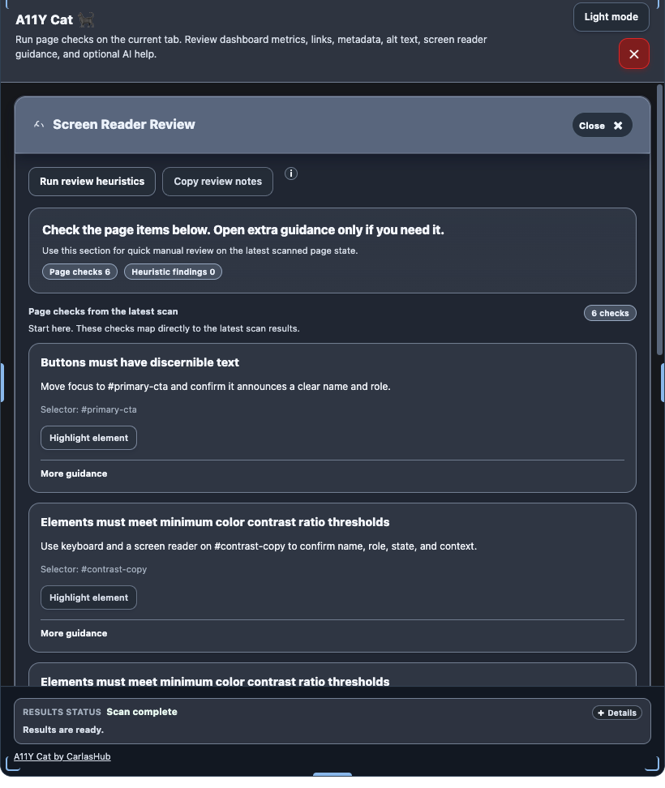

Test A11Y Cat as a bounded review tool. Do not treat the extension as a compliance certificate, a production sign-off, or a replacement for manual assistive-technology testing.
Recommended reading order: install the extension, run the scan, review confirmed issues first, then review buckets, limitations, and exports.

Use highlight and local evidence features during testing so reports stay tied to the actual page state.
How to install the beta
Build or obtain the current beta package.
Open chrome://extensions.
Enable Developer mode.
Use Load unpacked for a local build or install the agreed beta package.
How to test
Open a supported Chrome / Chromium desktop page.
Run the deterministic WCAG scan from the toolbar panel.
Review Confirmed Issues first.
Review manual/review buckets and scan limitations next.
Use exports for handoff only after checking sensitive snippets and notes.
Verify real AT behaviour separately with manual VoiceOver, NVDA, or JAWS testing where required.
What evidence to provide
Context
Page URL and title if shareable, user flow, state reached, expected result, and actual result.
Classification
Whether the issue was confirmed, review-only, advisory, or a documented limitation.
Evidence
Diagnostics export, screenshots, exported evidence bundle, and browser/extension version where available.
What not to scan without permission
private customer environments you are not authorized to access
production systems with confidential content unless your role explicitly allows it
authenticated or internal pages that are outside your testing scope
third-party sites where automated requests or inspection would violate policy
How to report bugs
Report beta bugs through the public repository issue tracker.
Title:
Page or flow:
Environment:
Extension build/version:
Expected result:
Actual result:
Evidence attached:
Confirmed / review / advisory / limitation:
Permission to share page URL/title publicly: yes/no
If you change visible labels, result categories, exports, storage behaviour, or privacy boundaries during beta work, update the canonical UI guide and the public docs in the same change set.